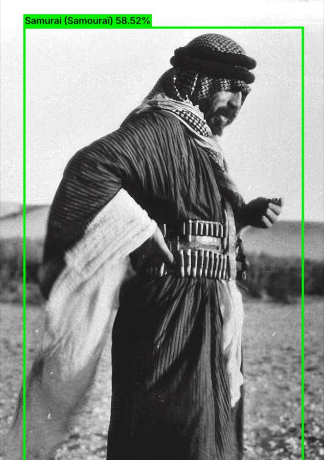
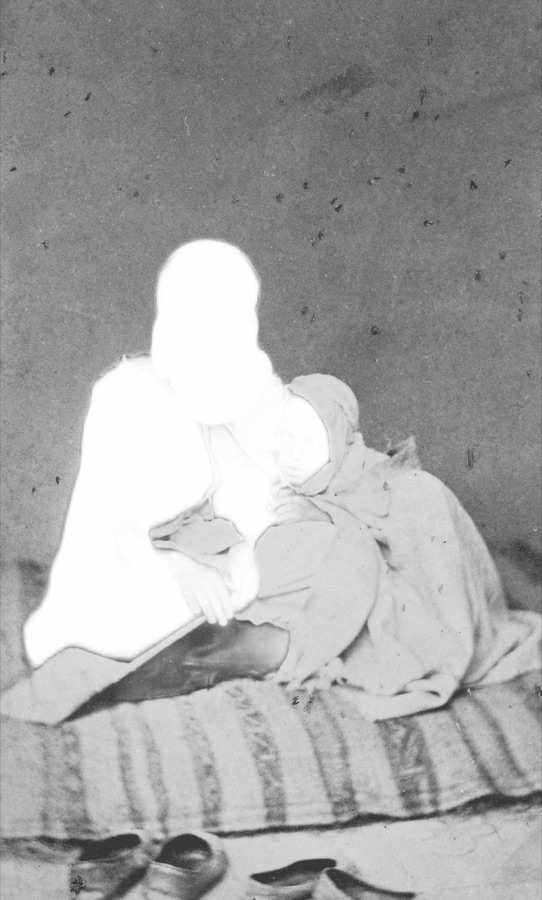

לקחנו מודל אחד ושש תמונות ישנות, ונתנו לו רשימות מילים שונות. יצאו היסטוריות שונות.
דניה אלטמן ועידן ירחיאותו שייח׳, אותו מודל. רק הרשימה מתחלפת.
היא מריצה מודל זיהוי על צילום של גרטרוד בל, והמודל קורא לגבר הבדואי ״סמוראי״, בביטחון של 58%.

היא מוחקת את האנשים מהתמונות (בעזרת U2-Net) ונשארות רק צלליות לבנות.
התמונות מאתר האמנית
היא לוקחת תמונות ישנות של בדואים, שצילמה גרטרוד בל, בריטית שהסתובבה באזור בתחילת המאה ה-20, ועוד אוסף תמונות ״מזרחיות״ מהגטי. כלומר, אלה תמונות שאנשים מבחוץ צילמו. מה שחסר זה האנשים עצמם: לא יודעים איך קראו להם, מה הם חשבו, או אם בכלל רצו שיצלמו אותם.
כשהיא מריצה את התמונות דרך תוכנות זיהוי, הן פשוט לא מבינות מה הן רואות. חפץ ביד של ילד הופך ל״סקייטבורד״, והבגדים של גבר בדואי הופכים ל״מדים צבאיים״. זה חושף כמה המודל לא מכיר את העולם הזה. מה שמוסתר זה שהמודל אף פעם לא מודה שהוא לא יודע. הוא תמיד נותן תשובה, גם כשהיא שטות.
סירוב. היא מוחקת את האנשים מהתמונות ומשאירה במקומם צלליות לבנות, כדי שאף מודל לא יוכל ללמוד מהם. בלשונה: ״סירוב לאפשר לנתונים מסוימים להפוך לחומר אימון״ (עמ׳ 46). מה שמעניין הוא שכשהיא מאמנת מודל על התמונות המחוקות, הוא עדיין מייצר את אותן תנוחות מהצילומים המקוריים. גם בלי האנשים, המבט של הצלם נשאר.
סומאיני כותב שמה שמארגן את המרחב הלטנטי זה כוח ״לא-אנושי, סטטיסטי״ (עמ׳ 39). אנחנו לא מסכימים איתו. המילה ״סטטיסטי״ עושה פה עבודה פוליטית: היא מעלימה את מי שכתב. מישהו בחר מה ייכנס למודל, מישהו בחר איך לשאול אותו, ומישהו כתב את המילים שמותר לו לבחור מהן. כשקוראים לזה ״סטטיסטיקה״, אף אחד לא אחראי.
המודל שהשתמשנו בו נקרא CLIP (סומאיני מזכיר אותו במאמר). הוא לא יודע לכתוב מילים בעצמו. הוא לא יכול להסתכל על תמונה ולהגיד ״זה גבר שמכין קפה״. הדבר היחיד שהוא יודע לעשות זה לקבל תמונה ומילה, ולתת ציון כמה הן מתאימות.
אז אם המילה ״קפה״ לא נמצאת ברשימה, המודל אף פעם לא יגיד ״קפה״, גם אם יש קפה באמצע התמונה. הוא לא יכול להגיד ״אני לא יודע״, והוא לא יכול להגיד ״אף מילה לא מתאימה״. מי שכותב את הרשימה קובע מה המודל יכול ״לראות״.
זה בדיוק מה שקרה בסלף: למודל של אלג׳ויסר הייתה רשימה קבועה של קטגוריות שמתכנתים כתבו. ״בדואי״ לא היה ברשימה. ״סמוראי״ כן. מישהו החליט שסמוראי הוא קטגוריה שצריך לזהות, ושבדואי הוא לא.
וגם ״הציון״ עצמו לא נופל מהשמיים. CLIP למד מה מתאים למה מכ-400 מיליון תמונות מהאינטרנט, יחד עם הכיתובים שאנשים כתבו להן (רדפורד ואחרים, 2021). כלומר, הוא למד לראות דרך העיניים של מי שצילם, תייג והעלה תמונות לרשת. אם במשך מאה שנה כתבו מתחת לתמונות של ערבים ״שבטיים חמושים״, זה מה שהמודל יחשוב שמתאים.
מילים שקצין בריטי היה כותב בדוח ב-1920
מילים של מישהו שמכיר את האנשים
ליד כל תמונה: מה באמת קורה בה (לפי הארכיון), ואיזו מילה המודל בחר מכל רשימה. המספר הקטן הוא כמה המודל היה בטוח.
אף מילה לא מתאימה. מודל חכם היה אומר ״אף אחת מהן״. CLIP לא יכול להגיד את זה. הוא חייב לבחור.
המודל בחר ״סמוראי״ ב-0 מתוך 6 תמונות
סמוראי.שש תמונות. שש פעמים.
בטוח עד 99%. בדיוק המילה שהמודל בעבודה של אלג׳ויסר בחר לגבר הבדואי. ושייח׳ אל-עסכר, שמכין קפה לאורחים שלו? המודל חשב שיש 21% שהוא חללית.
המודל לא ״ראה״ פה כלום. הוא בחר את המילה הכי פחות גרועה מרשימה שמישהו נתן לו, ואמר אותה בביטחון מלא. זה הכוח ה״לא-אנושי, הסטטיסטי״ שסומאיני מדבר עליו.
והבעיה היא לא שהוא טועה. הבעיה היא שהוא נשמע בטוח. ״סמוראי 99%״ נראה כמו מדע. מספר עם אחוזים מרגיש כמו עובדה, גם כשהוא מגיע מרשימה של פיצה וחללית. עכשיו תחשבו על מערכות כאלה שמסווגות אנשים במצלמות אבטחה, בגבולות או בשדות קרב. שם אף אחד לא רואה את הרשימה. רואים רק את התשובה ואת האחוזים.
כל מילה נכנסה למודל בתבנית ״תצלום של …״ (באנגלית, כי המודל מבין רק אנגלית). המודל: CLIP, הורץ ב-15.11.2026. התוצאות בדיוק כמו שיצאו, בלי שינוי.
עכשיו אתם מחליטים מה לתת למודל. בוחרים תמונה, בוחרים איזו רשימת מילים לתת לו, ורואים איזו מילה הוא בחר. התמונה לא משתנה והמודל לא משתנה. משתנות רק המילים שהוא יכול לבחור מהן.
כתבו רשימה משלכם: כמה מילים באנגלית (המודל מבין רק אנגלית), כל מילה בשורה. המודל יבחר אחת מהן לתמונה שבחרתם למעלה. בפעם הראשונה זה לוקח כמה שניות, כי הדפדפן מוריד את המודל.
אלג׳ויסר מוחקת את האנשים כדי שהמודל לא ילמד מהם. אנחנו עשינו הפוך: השארנו את האנשים ואת המודל כמו שהם, ושינינו רק את המילים. שייח׳ אל-עסכר מכין קפה באוהל שלו. עם מילים של קצין הוא ״שודד מדבר״. עם מילים של מקומי הוא ״גבר בכאפייה״. עם רשימה מטופשת הוא ״סמוראי״. המודל לא החליט מי האנשים האלה. מי שכתב את המילים החליט.
ועכשיו השאלה הקשה: מי כתב את הרשימה הראשונה? גרטרוד בל לא הייתה רק צלמת. היא עבדה בשביל המודיעין הבריטי, ועזרה לשרטט את הגבולות של עיראק (האוול, 2007). הכיתובים שלה, ״בני שבט עם רובים״, ״קבוצת בדואים״, הם גם רשימה. רשימה של מי ששולט, על מי שנשלט. מה שקראנו לו פה ״מה באמת יש בתמונה״ הוא בעצם עוד רשימה של מישהו מבחוץ.
האנשים בתמונות אף פעם לא קיבלו לכתוב רשימה. לא ב-1909, לא בארכיון, ולא במודל. גם לא בעבודה הזאת: את הרשימה ״שלהם״ כתבנו אנחנו. סירוב, כמו אצל אלג׳ויסר, זו אולי התשובה היחידה שלא מחייבת לכתוב רשימה בשביל מישהו אחר.